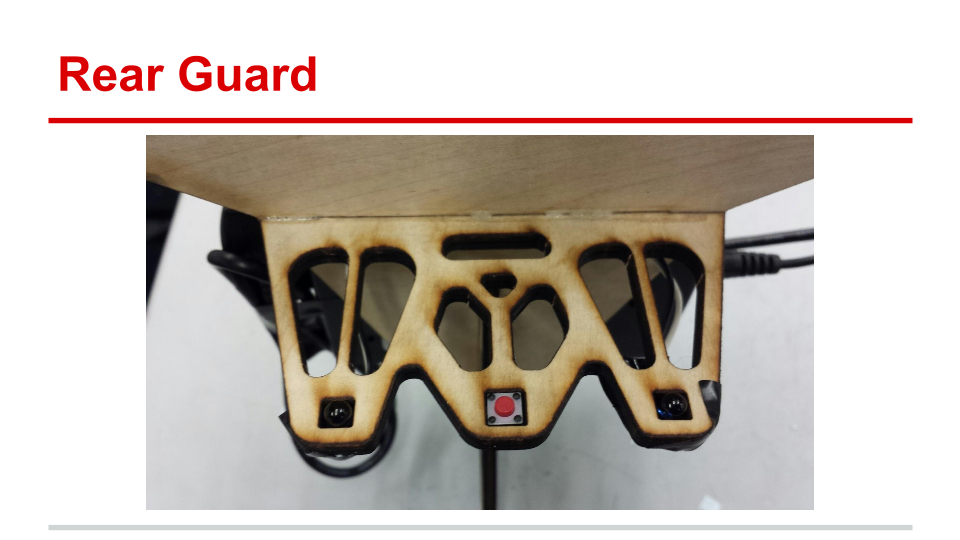
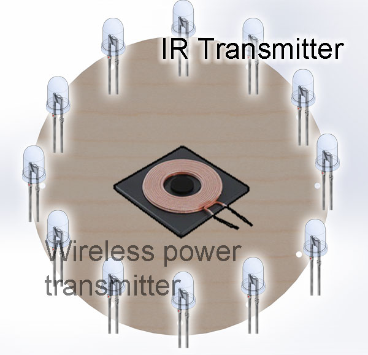

As a docking robot, one major requirement was the robot be able to locate the charging station from a meter away and align its coils with the coils on the charging station.

Figure 1. The IR Navigation Sensors. The IR transceivers are on the two side holes, and the push button is in the middle.
System Design
Our plan for IR navigation was to put 10 IR LEDs in a ring around the charging station and two IR receivers on the robot. Depending on which IR receiver was seeing more IR light, the robot would either turn left, turn right or drive straight. When the robot drives into the charging platform, a button(as seen in figure 1 between the IR transceivers) pressed. When this button is pressed, the robot stops driving forward and switches to charging mode.

Figure 2. The IR beacon lights are attached to the edge of the charging station. LEDs are arranged around the edge so that the robot can see the charging station from all directions.
Initial tests were successful at getting motors to respond to differences in ambient light exposure, and this was exciting to see. However, calibrating and filtering the sensors to see infrared light from infrared LEDs proved to be much more challenging.
Unfortunately, we were not able to completely implement IR Navigation. Initial testing showed promise, but we now know that the tests were not robust enough to reveal some of the problems that we later ran into. We realized too late that the IR receivers we had purchased were not suited to our needs and would not give us the kind of information necessary for IR location sensing. We tried to replace the IR receivers by using two of the IR LEDs as photodiodes. This did not provide clean enough data, so in the end the robot could not locate the beacon and dock at the charging station.